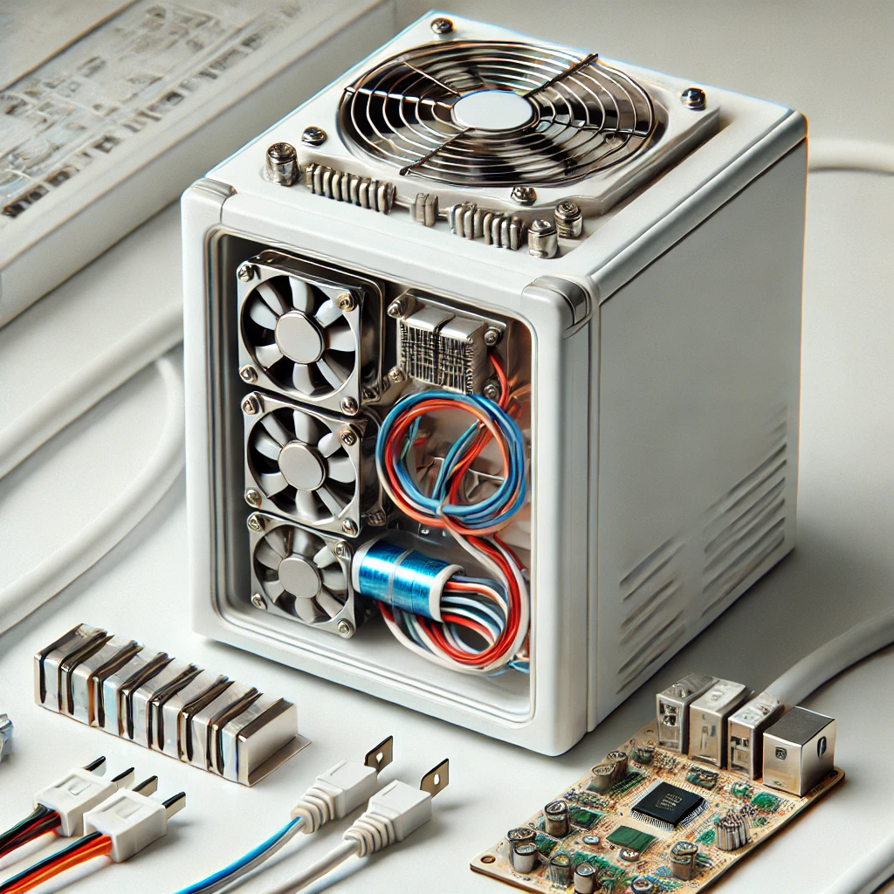
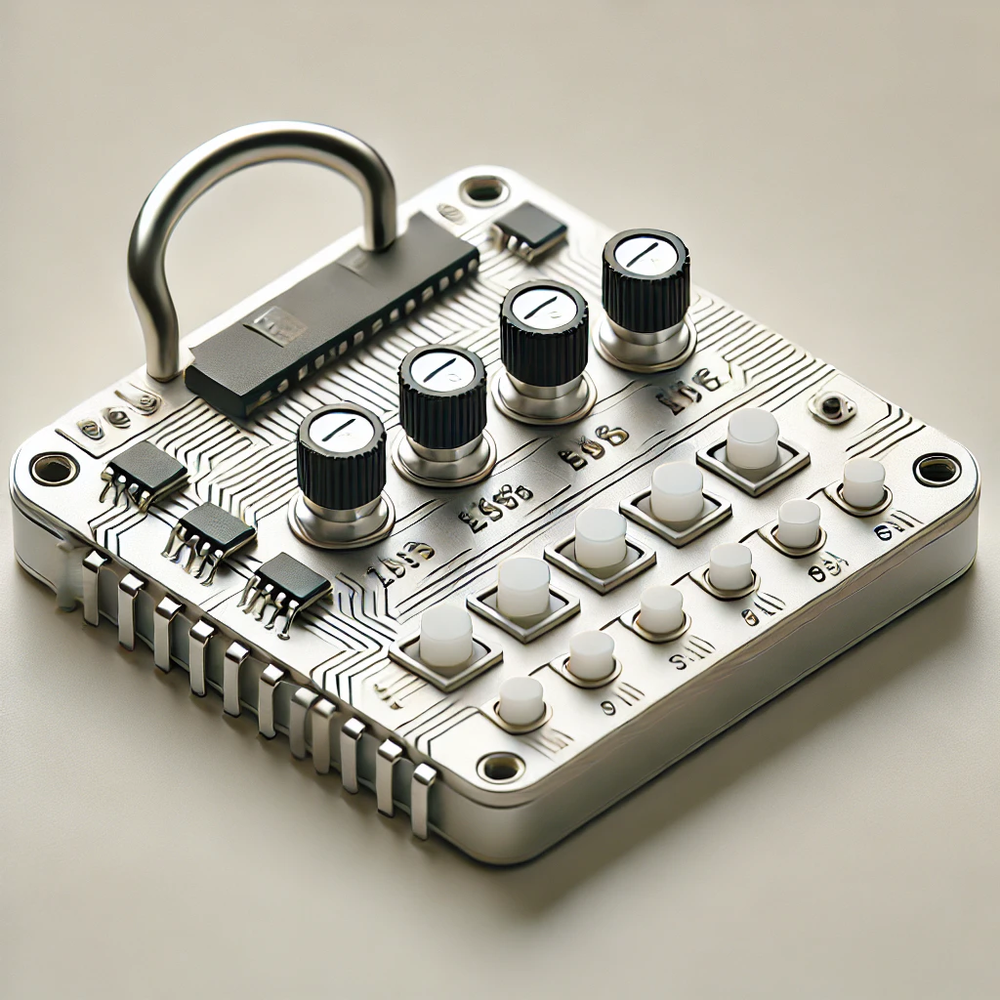
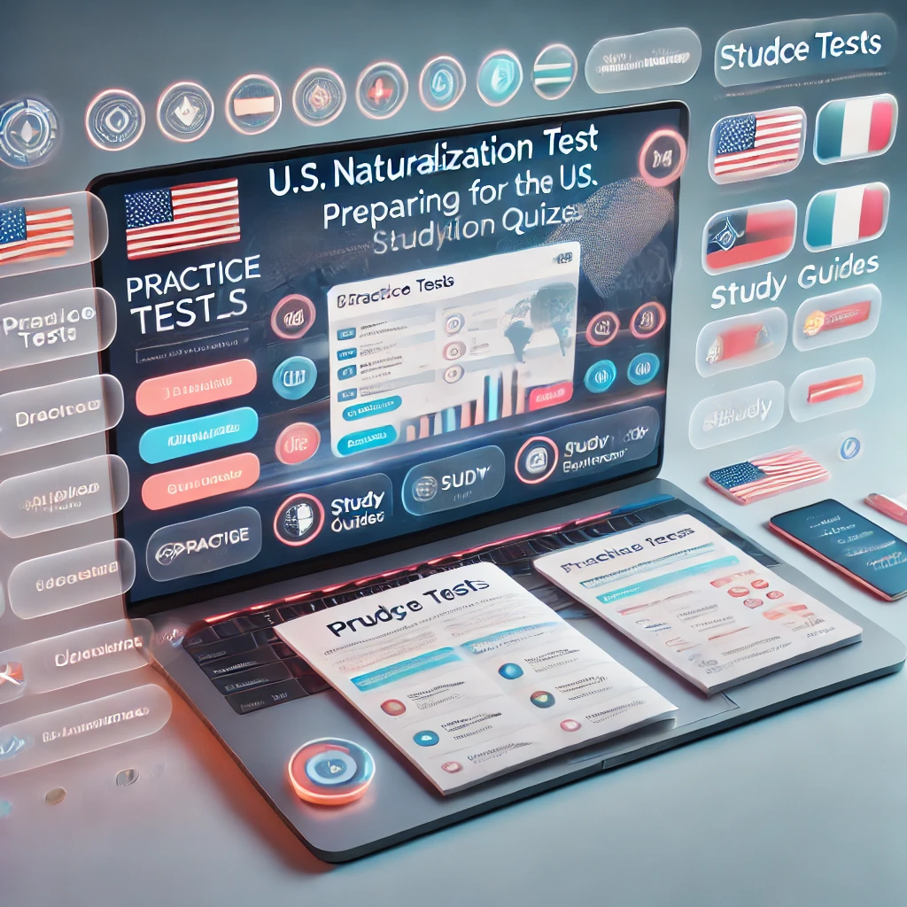

Python

C++

Java

JavaScript

HTML

CSS


This project involves the thorough analysis and repair of a mini fridge's thermoelectric cooling system. By leveraging a strong understanding of electrical circuits, I diagnose performance issues and apply targeted solutions to restore functionality. My work includes repairing and reassembling key electrical components such as thermoelectric modules and wiring. Through these efforts, I hope to restore the system back to full functionality, as well as optimizing the cooling performance and extending the life of the unit. This hands-on experience will sharpen my troubleshooting and technical skills in electrical systems and circuit design.
Developed an electronic security system utilizing operational amplifiers, comparators, and an infrared sensor for enhanced detection and monitoring. The system focused on analog circuit design principles, with an emphasis on signal amplification and precise signal processing. To ensure optimal functionality, SPICE simulations were employed to test the system's performance under various conditions. These simulations allowed for in-depth analysis and real-time adjustments to circuit parameters, ensuring system reliability. Key features included the integration of a latch mechanism to maintain alarm states, ensuring the system’s stability even during brief interruptions in the infrared beam. This design optimized performance stability, providing continuous and consistent alarm activation, crucial for effective security monitoring.

The Four-Password Combination Lock project involved the development of a digital prototype using Verilog programming on an FPGA board. The design simulated a traditional password access control mechanism, utilizing a Moore Finite State Machine to manage the lock's operation. LEDs and push buttons were integrated into the FPGA board to test and validate the accuracy and functionality of the system. This project demonstrated the practical application of digital design principles and showcased the effective use of hardware programming to create a secure, interactive locking system.

CitizenQuiz is an interactive platform designed to support immigrants in their preparation for the U.S. Naturalization Test. Using a full-stack JavaScript approach, the website offers a comprehensive suite of learning tools, including practice tests, study guides, and educational resources. The project prioritizes accessibility, incorporating multilingual support through translation APIs to cater to users from diverse linguistic backgrounds. yThe goal is to provide an inclusive, user-friendly experience that helps individuals navigate the naturalization process with ease and confidence.
Budget Guard is an innovative web application designed to help users find the lowest prices for products by directing them to nearby stores. Developed by a team of 20 students, the website allows users to easily search for items within a specified proximity, ensuring they can find the best deals close to home. As the lead designer, I was responsible for creating intuitive and visually appealing user input pages using Figma. This streamlined the search process and provided a seamless, engaging experience for users. Additionally, I contributed to the front-end development, ensuring smooth integration of design elements with functional features.
Travel-Expo is an iOS application designed to enhance the travel experience by providing users with valuable tools and real-time information about popular destinations. In collaboration with another student, I'm leading the development of this app using Xcode and Swift. The user interface is built with SwiftUI, creating a seamless and intuitive experience. By integrating the Amadeus for Developers API, the app offers real-time data on top travel destinations each week, ensuring up-to-date and accurate content. Additionally, I have implemented practical features such as a currency converter and a built-in map using the UIKit and MapKit frameworks, enriching the app's functionality and making it an essential tool for travelers.